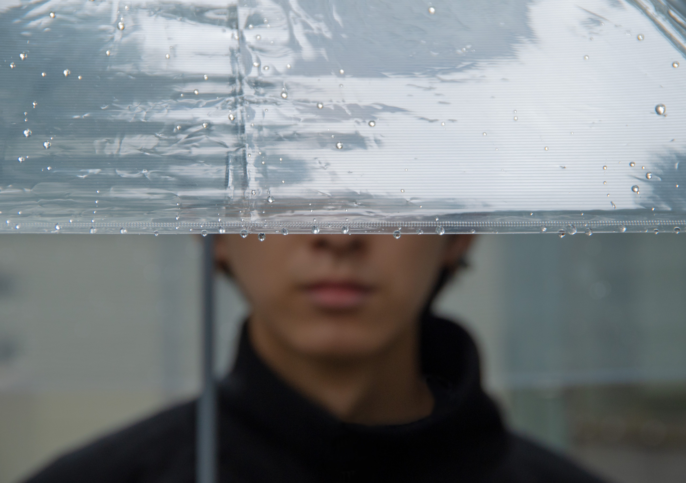

透明なモザイク
2023
近年SNSなどでは匿名や新しく考えた名前を登録し、自分の名前を使わずに使用している人が多い。その上、あえて「わたし」と分からせないために顔や素性を隠したりする。 この話はSNSだけではない。自分自身を見せないために消極的になって、大多数の人達の中に紛れ込み意見を発しなかったり、自分に自信がなく何かを使い己を隠す事は、現実でも起こっている話だ。 皆んな顔にモザイクをかけて「わたし」を風景の一部にする。これらの風潮のせいか、何も隠していない人達に批判的な意見が集まる。 私はその状況を間接的に写真で表現したかった。そのため、一見問題とは関係なさそうに見える日用品の傘を利用した。 傘をさすと、さしている人の顔が隠れてしまう。一方安価なビニール傘は透明故にとてもクリアで中がよく見える。 その光景を見た時、ビニール傘をさしている人は「わたし」を隠していないようでとても美しく、また先程あげた問題が当てはまると考えた。 偽りのない「わたし」を出している人の周りには、必ずそれが気に食わない人達が存在する。 その人達が出す力の影響は大きく、自分を出していた人の「わたし」をかき消してしまう。 透明だったものも、いずれフィルターがかかっていき、傘の先端にある水滴ぐらいでしか中身を除けなくなるだろう。 自分を出す事は勇気のいることで、リスクが伴う。思えば危険性がある時点で顔にモザイクをかける事は必然的と言えるだろう。 この風潮が改善されなければ、今後さらに自分を出す事は踏み込み辛くなる。 そうすれば、私達の中にある「わたし」は消えていってしまう。
award : Pentaxフォトコンテスト2023 U-25奨励賞
